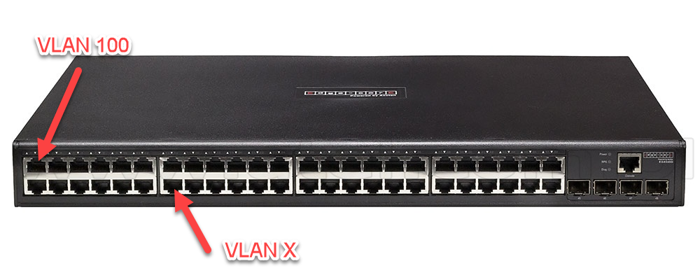

In een gewoon LAN hangt alles aan elkaar via gewone switches. Studenten, docenten, de boekhouding, de IT-afdeling, gasten en servers delen hetzelfde netwerk, zonder scheiding.
Dat levert een beveiligingsrisico op: een student kan de servers van de boekhouding bereiken. Toegangsrechten vormen een eerste barrière, maar op netwerkniveau is er niets afgeschermd.
Je zou per gebruikersgroep een fysiek gescheiden netwerk kunnen aanleggen. Dat is duur en arbeidsintensief, en het wordt onwerkbaar zodra een groep over meerdere locaties verspreid zit.
VLAN staat voor Virtual Local Area Network. Een VLAN maakt een logisch gescheiden netwerk op dezelfde fysieke infrastructuur. Toestellen in verschillende VLAN's bereiken elkaar niet, ook al zitten ze op dezelfde switch.

Stel je twee aparte switches voor, een voor de studenten en een voor de docenten. Beide groepen zijn dan volledig van elkaar gescheiden. Met VLAN's bereik je hetzelfde op één switch, door poorten aan verschillende VLAN's toe te wijzen: VLAN 100 voor de docenten, VLAN 200 voor de studenten, VLAN 300 voor gasten.
Hoe je indeelt hangt af van de organisatie. Dit kom je vaak tegen: